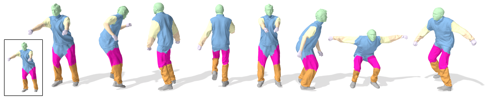
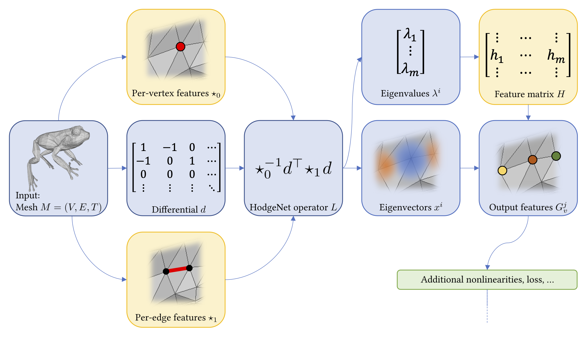

HodgeNet: Learning Spectral Geometry on Triangle Meshes

Abstract
Constrained by the limitations of learning toolkits engineered for other applications, such as those in image processing, many mesh-based learning algorithms employ data flows that would be atypical from the perspective of conventional geometry processing. As an alternative, we present a technique for learning from meshes built from standard geometry processing modules and operations. We show that low-order eigenvalue/eigenvector computation from operators parameterized using discrete exterior calculus is amenable to efficient approximate backpropagation, yielding spectral per-element or per-mesh features with similar formulas to classical descriptors like the heat/wave kernel signatures. Our model uses few parameters, generalizes to high-resolution meshes, and exhibits performance and time complexity on par with past work.
Method

An overview of our HodgeNet architecture for learning from triangle meshes. The boxes highlighted in yellow have learnable parameters, while the remaining boxes are fixed computations. Given a triangle mesh as input, we use MLPs to learn per-vertex and per-edge local features, from which we construct the Hodge star operators. Together with a differential matrix, obtained from the mesh topology, we use these operators to assemble a Hodge Laplacian. The eigenpairs of the Laplacian are then used to learn per-vertex, per-face, or per-mesh features suitable for the learning task at hand.
Video
Paper and supplementary material
D. Smirnov, J. Solomon
HodgeNet: Learning Spectral Geometry on Triangle Meshes
SIGGRAPH 2021, virtual
Paper | BibTeX
@article{smirnov2021hodgenet,
title={{HodgeNet}: Learning Spectral Geometry on Triangle Meshes},
author={Smirnov, Dmitriy and Solomon, Justin},
month={August},
year={2021},
journal={ACM Transactions on Graphics (TOG)},
publisher={ACM},
volume={40},
number={4},
pages={166:1--166:11}
}
Acknowledgements
The MIT Geometric Data Processing group acknowledges the generous support of Army Research Office grant W911NF2010168, of Air Force Office of Scientific Research award FA9550-19-1-031, of National Science Foundation grant IIS-1838071, from the CSAIL Systems that Learn program, from the MIT–IBM Watson AI Laboratory, from the Toyota-CSAIL Joint Research Center, from a gift from Adobe Systems, from an MIT.nano Immersion Lab/NCSOFT Gaming Program seed grant, and from the Skoltech-MIT Next Generation Program. This work was also supported by the National Science Foundation Graduate Research Fellowship under Grant No. 1122374.